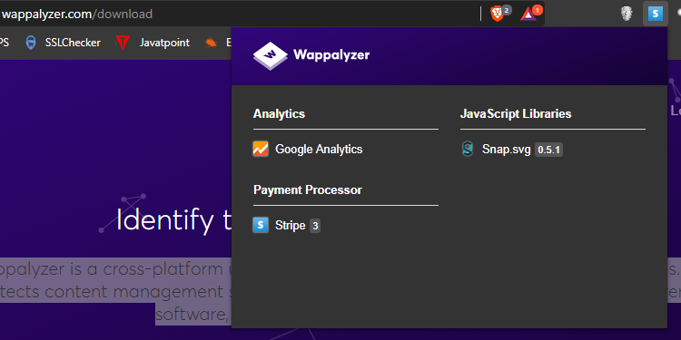

https://www.wappalyzer.com/ -
Wappalyzer is a cross-platform utility that uncovers the technologies used on websites. It detects content management systems, ecommerce platforms, web frameworks, server software, analytics tools and many more
